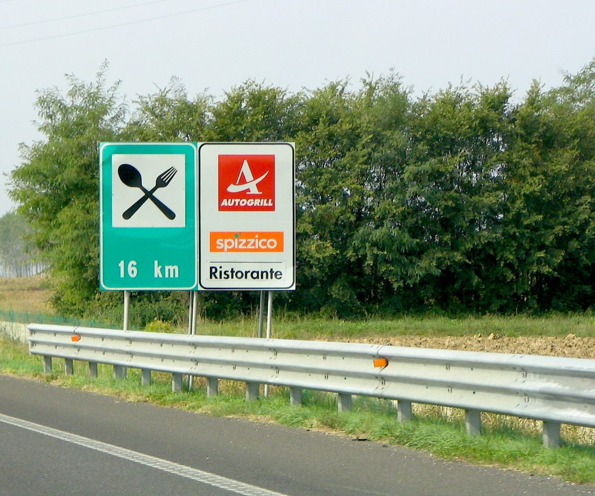
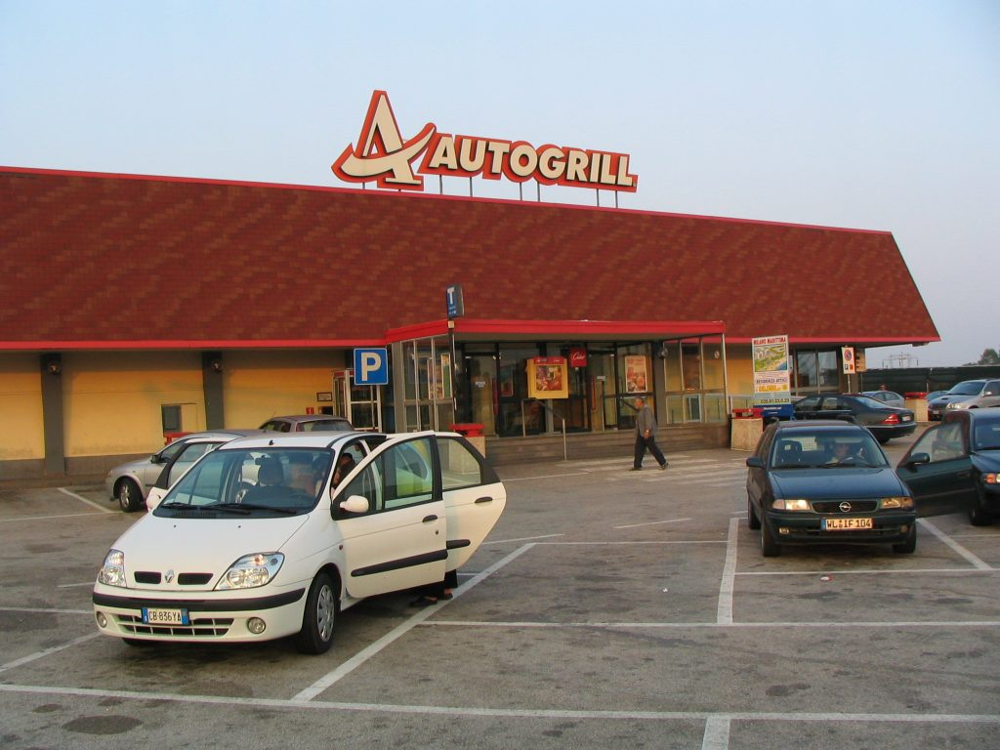

Autogrill restaurant sign
Rest areas (aree di servizio) are open 24/7 and are available about every 60 km (40 miles). Most often they have a gas station and a snack bar (with or without restaurant) also known as Autogrill.
Autogrill restaurant
Despite what you may think about “gas station food", Autogrills offer excellent food either at the restaurant or at the snack bar. If you decide to get something at the bar, remember to pay first and then show the receipt to the bar attendant at the service counter. The Autogrill restrooms are taken care of by an attendant and can be used free of charge. Sometimes attendants place a small plate on the counter to show that tips are appreciated. Keep in mind that they are not supposed to do it. A few years ago an attendant lost her job because of that. Nevertheless, some of them take the risk. Autogrills have a small store which sells a handful of items for the car trip (food, music, drinks, drug-store necessities, etc.). In these parking lots you may find fake car-park attendants whose goal is getting a little tip to watch your car. Thefts often happen in Autogrill parking lots, so giving them some spare change might actually turn out to be a good investment. However, if possible, always try to park your car in a spot that you can supervise from the restaurant. {This is an excerpt from chapter 2 “ Driving in Italy” of the eBook “Italy from the Inside. A native Italian reveals the secrets of traveling in Italy”. Buy our eBook on Amazon and leave us a review! If it’s good, you’ll make us happy, if it’s bad, you’ll make us improve. Thank you either way!}